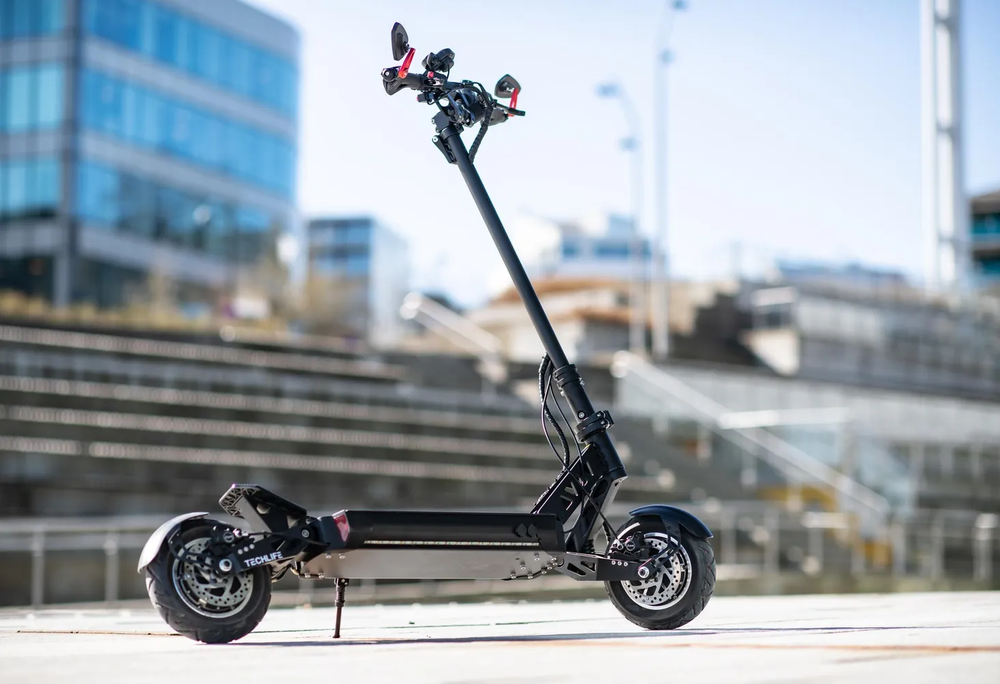

HES.se erbjuder elsparkcyklar som enkelt kan hyras via företagets mobilapp. Användaren hittar en ledig sparkcykel på en karta, skannar en QR-kod och kan därefter börja köra. Vår vision Vi vill skapa en framtid där korta resor blir enklare, billigare och mer hållbara. Genom att erbjuda ett smidigt alternativ till bilen och kollektivtrafiken vill vi bidra till renare och mer lättillgängliga städer. Övrig information Alla sparkcyklar är elektriska och laddningsbara. Hjälm rekommenderas vid varje resa. Sparkcyklarna kontrolleras och underhålls regelbundet. Betalning sker direkt i mobilappen. Företaget arbetar för att minska utsläpp och främja hållbara transporte
HES.se – Enklare resor, grönare framtid! 🌱